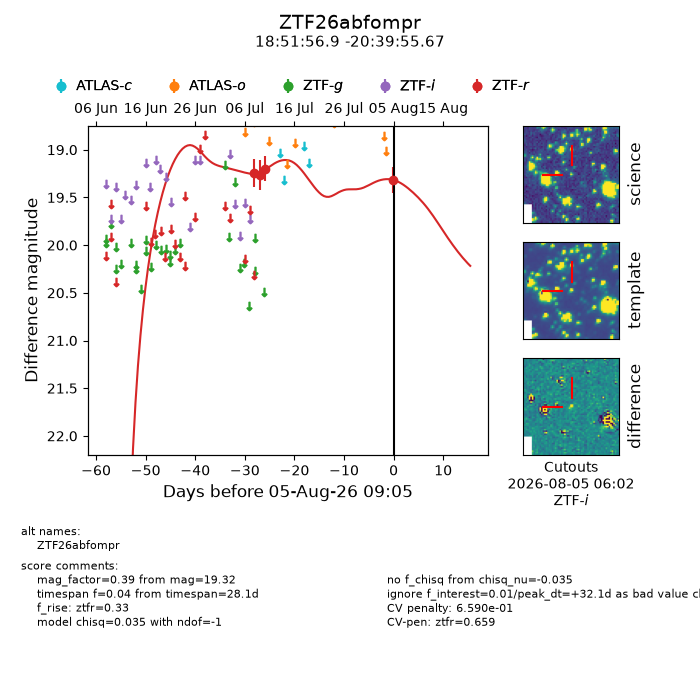
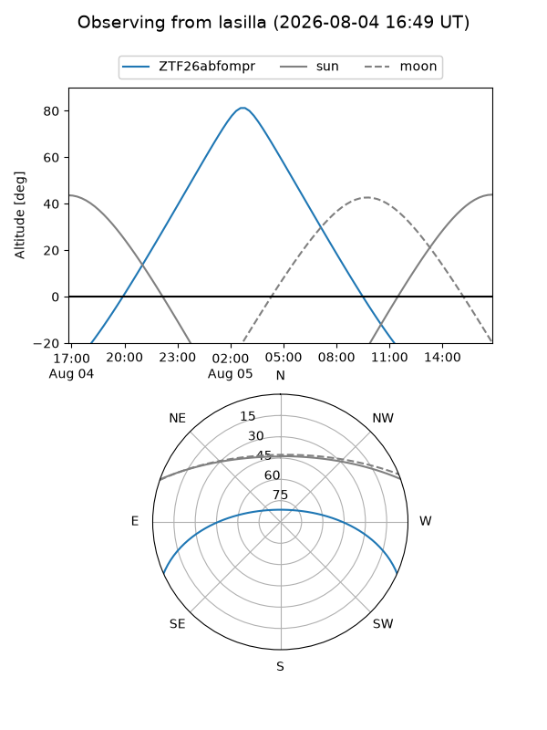
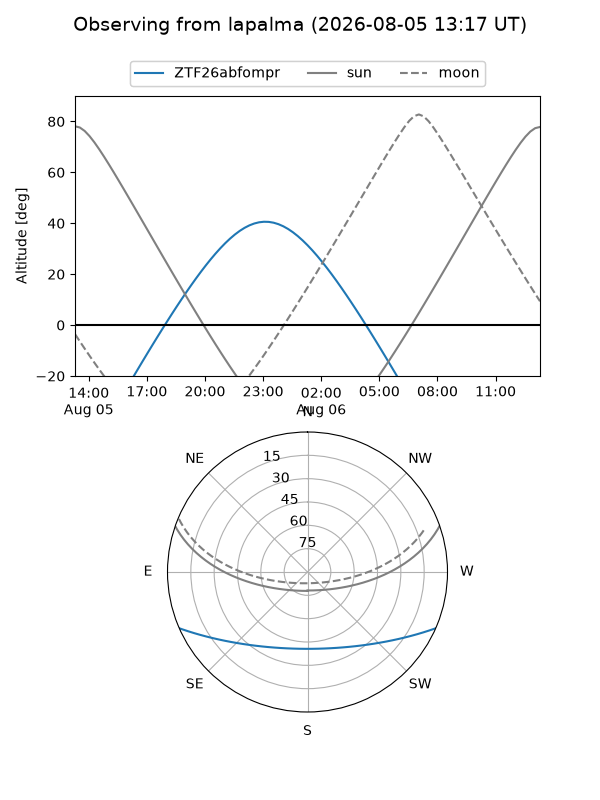
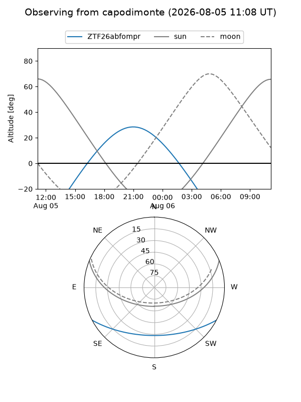
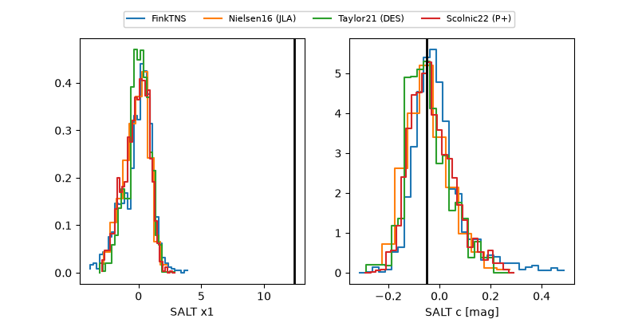

ZTF26abfompr
Target ZTF26abfompr at 2026-08-05 09:07
Aliases and brokers:
FINK-ZTF: ztf.fink-portal.org/ZTF26abfompr
Lasair-ZTF: lasair-ztf.lsst.ac.uk/objects/ZTF26abfompr
ALeRCE-ZTF: alerce.online/object/ZTF26abfompr
Direct TNS query: direct search
alt names
ZTF26abfompr (ztf,fink_ztf)
Coordinates:
equatorial (ra, dec) = 282.9869,-20.66546
equatorial (HMS+DMS) = 18:51:56.85,-20:39:55.67
galactic (l, b) = (14.4280,-9.36792)
Flags:
peak dt: +32.1
likely cv: !!
Photometry:
last ztfr=19.32
4 ztfr detections
Lightcurve

Visibility



Additional plots
